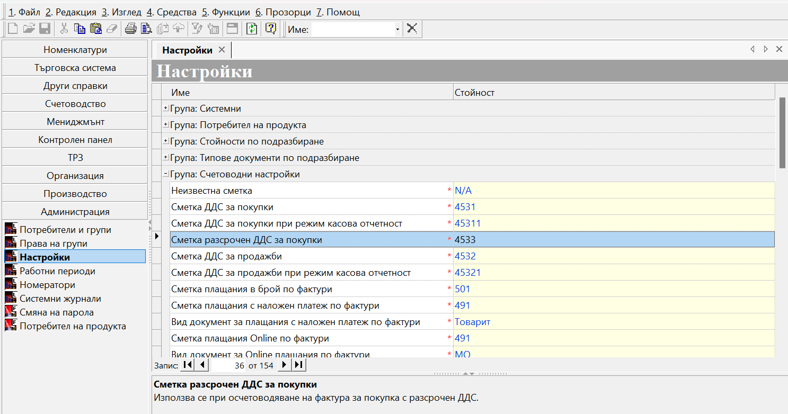
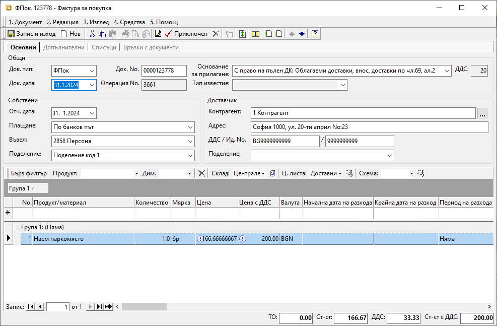
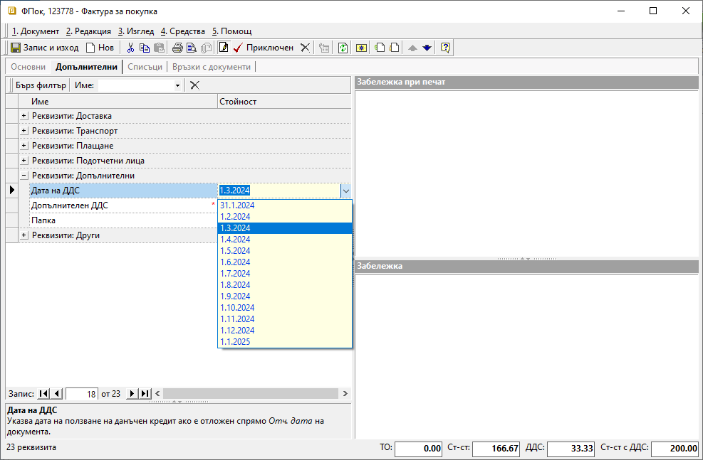
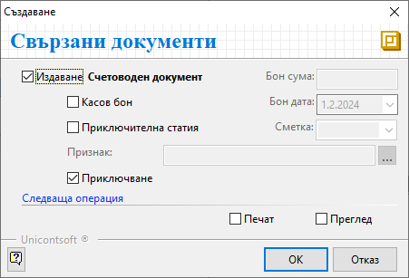
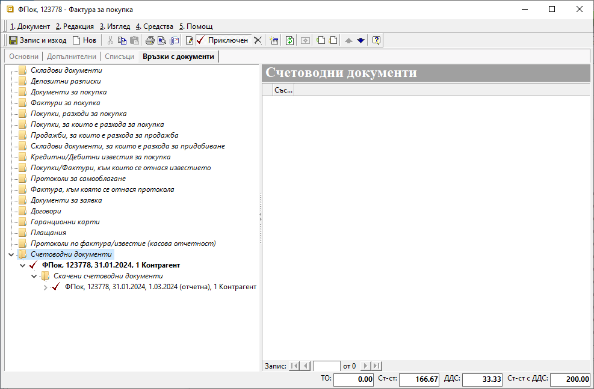
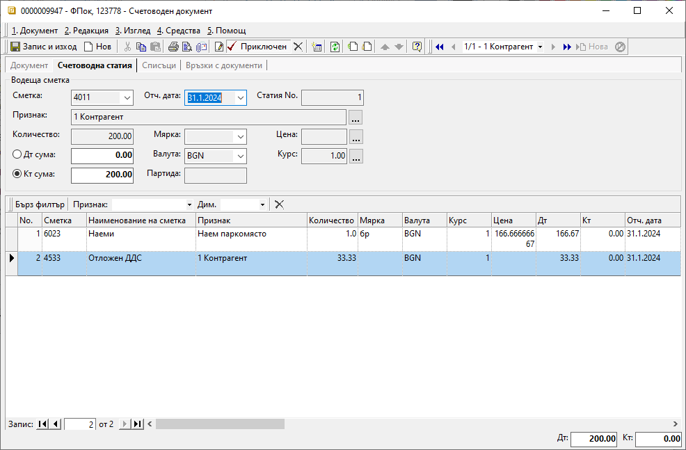
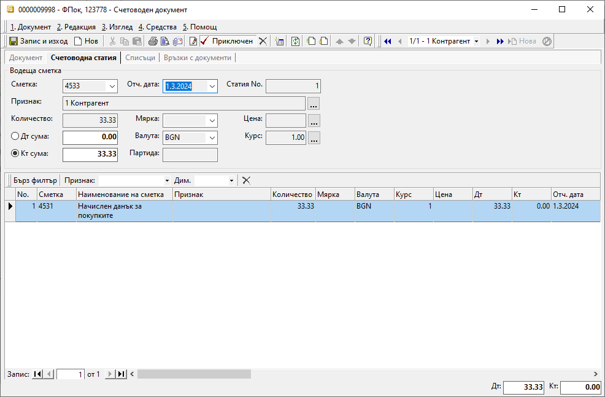

Отложено начисляване на ДДС за покупки#
Въведение и задължителни настройки#
Законът за ДДС дава право на регистрираните по него лица да използват данъчния кредит при покупките в рамките на следващите 12 месеца. Системата предлага автоматизация на процеса по отложено начисляване на ДДС. За целта се изисква предварително да настроим транзитна сметка за отложен ДДС.
Настройката е еднократна и се намира в Администрация || Настройки || Група: Счетоводни настройки. След като се навигираме до реда със Сметка разсрочен ДДС за покупки, в колона Стойност избираме сметка за отложен ДДС, която предварително сме настроили в Сметкоплан. Направените промени трябва да бъдат записани.

Tip
При работа с документи, засягащи минали или бъдещи данъчни периоди, е задължително настройките в Администрация || Работни периоди да бъдат съобразени. При липсващ разрешителен период системата не позволява приключване на документи или редактиране на дати.
Покупка с отложено начисляване на ДДС#
След като сте изпълнили горните изисквания, документът с покупката може да бъде въведен и осчетоводен коректно.
Така, в крайна сметка, ще имате следните две счетоводни статии:
31.01.2024 г.
Статия
Дт Сметка |
Кт Сметка |
Признак |
Сума |
|---|---|---|---|
6023 |
166,67 лв. |
||
4533 |
33,33 лв. |
||
4011 |
200,00 лв. |
01.03.2024 г.
Статия
Дт Сметка |
Кт Сметка |
Признак |
Сума |
|---|---|---|---|
4531 |
33,33 лв. |
||
4533 |
33,33 лв. |
В следващия пример показваме как за фактура от 31.01.2024 г., получена в срок през февруари, ще отложим данъчния кредит за месец март. За дата на документа посочваме датата на издаване - 31.01.2024 г. и обзавеждаме останалите реквизити без особености.

Важното при схемата за отлагане на ДДС е в панел Допълнителни, поле Дата на ДДС да изберем месец март. Именно това ще определи отчетната дата, на която ДДС ще се отрази по дебита на сметка 4531.

Tip
Системата ограничава избора на дата в рамките на 12 месеца от датата на фактурата.
Приключваме фактурата за покупка и генерираме счетоводно записване.

С това системата генерира едновременно два счетоводни документа:

Основен счетоводен документ с датата на фактурата (31.01.2024 г.), където сумата на ДДС се отразява в Дт на настроената разчетна сметка:

Свързан, наречен Скачен счетоводен документ, който е с отчетна дата през месец март. В него сумата на ДДС се прехвърля от разчетна с/ка 4533 като ДДС за внасяне в дебита на с/ка 4531:

Въвеждане на фактура за покупка, получена със закъснение#
Предлагаме да използвате тази схема за автоматично осчетоводяване, когато въвеждате също и получени със закъснение фактури за покупка.
Да речем, че в месец март получавате фактура за наето паркомясто, която е била издадена на 01.01.2024. Разбира се, фактурата се въвежда с датата на издаване, т.е. Док.дата е 01.01.2024. И, както вече казахме, за да се отрази правилно ДДС на документа през месец март, трябва от панел Допълнителни да посочим това в реквизит Дата на ДДС.
Приключваме фактурата за покупка стандартно и генерираме счетоводно записване, при което системата създава едновременно две счетоводни записвания: основен и скачен документ. В основния счетоводен документ, с отчетна дата 01.01.2024 г., сумата на ДДС се отразява в Дт на настроената разчетна сметка, а в скачения счетоводен документ, същата сума се закрива в с/ка 4533 през месец март.
За да начислим ДДС отложено, е нужно:
Настройка на Сметка разсрочен ДДС за покупки в Администрация || Настройки || Група: > Счетоводни настройки
Избор на Дата на ДДС в панел Допълнителни на документа (фактурата) за покупка
Генериране на счетоводни документи към фактурата за покупка